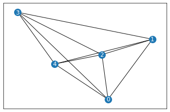
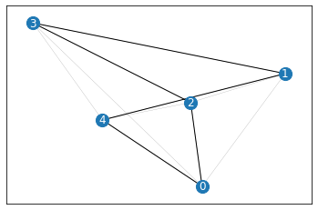

[1]:
import random
import numpy as np
import pandas as pd
import matplotlib.pyplot as plt
import networkx as nx
from graphenv.examples.tsp.graph_utils import make_complete_planar_graph, plot_network
%matplotlib inline
%load_ext autoreload
[2]:
%autoreload 2
Create and visualize simple network
[3]:
N = 5
# G = nx.cycle_graph(N)
G = make_complete_planar_graph(N, seed=2)
[4]:
_ = plot_network(G, path=None)

[5]:
dG = nx.DiGraph(G)
[6]:
dG.nodes[0]['visited'] = False
[7]:
list(dG.nodes(data=True))
[7]:
[(0, {'pos': array([0.4359949 , 0.02592623]), 'visited': False}),
(1, {'pos': array([0.54966248, 0.43532239])}),
(2, {'pos': array([0.4203678 , 0.33033482])}),
(3, {'pos': array([0.20464863, 0.61927097])}),
(4, {'pos': array([0.29965467, 0.26682728])})]
[11]:
from graphenv.examples.tsp.tsp_preprocessor import TSPPreprocessor
[12]:
TSPPreprocessor()(G, tour=[0, 1, 2])
[12]:
{'node_visited': array([2, 2, 2, 1, 1]),
'edge_weights': array([0.42488297, 0.30480944, 0.6368509 , 0.27680674, 0.42488297,
0.1665518 , 0.39098802, 0.30148716, 0.30480944, 0.1665518 ,
0.36058127, 0.13639966, 0.6368509 , 0.39098802, 0.36058127,
0.36502425, 0.27680674, 0.30148716, 0.13639966, 0.36502425]),
'current_node': 2,
'connectivity': array([[0, 1],
[0, 2],
[0, 3],
[0, 4],
[1, 0],
[1, 2],
[1, 3],
[1, 4],
[2, 0],
[2, 1],
[2, 3],
[2, 4],
[3, 0],
[3, 1],
[3, 2],
[3, 4],
[4, 0],
[4, 1],
[4, 2],
[4, 3]])}
Solve TSP using nx heuristics
[30]:
tsp = nx.approximation.traveling_salesman_problem
path = tsp(G, cycle=True)
print("TSP solution", path)
_ = plot_network(G, path=path)
TSP solution [0, 2, 3, 1, 4, 0]

Demo of gym env with random actions
[31]:
from graphenv.examples.tsp.tsp_nfp_state import TSPNFPState
from graphenv.graph_env import GraphEnv
[32]:
state = TSPNFPState(G, [0, 1])
state.observation_space.contains(state.observation)
[32]:
True
[33]:
config = {"state": TSPNFPState(G), "max_num_children": G.number_of_nodes()}
env = GraphEnv(config)
# env.__dict__
[41]:
from graphenv.examples.tsp.tsp_nfp_model import BaseTSPGNNModel
model = BaseTSPGNNModel()
[42]:
model.forward_vertex(env.make_observation()['vertex_observations'])
[42]:
(<tf.Tensor: shape=(6, 1), dtype=float32, numpy=
array([[14.423091 ],
[14.22373 ],
[13.937265 ],
[14.638204 ],
[14.0514345],
[14.423091 ]], dtype=float32)>,
<tf.Tensor: shape=(6, 1), dtype=float32, numpy=
array([[-0.4306183 ],
[-0.5652256 ],
[-0.557251 ],
[-0.4879589 ],
[-0.56981754],
[-0.4306183 ]], dtype=float32)>)
[ ]:
def sampler(mask):
choices = list(range(len([i for i in mask if i])))
return random.choice(choices)
obs = env.reset()
done = False
reward = 0.
while not done:
action = sampler(obs["action_mask"])
obs, rew, done, _ = env.step(action)
print(action, rew, done)
[ ]:
print("Random path", path)
_ = plot_network(G, path=env.state.tour)
[ ]: